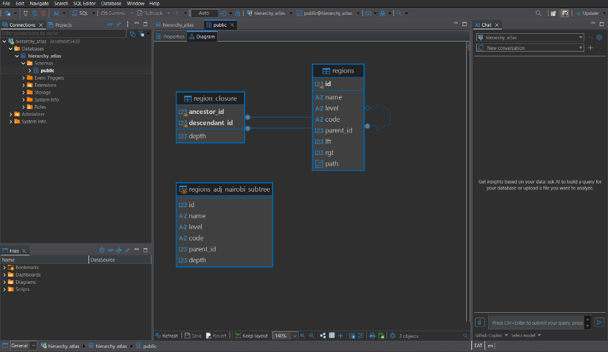

An empirical benchmark and architectural analysis comparing Adjacency List, Nested Sets, Closure Table, and ltree across Kenya's administrative geography: 6,158 nodes spanning 5 depth levels.
Select any of the 47 official Kenya National Bureau of Statistics (KNBS) counties to explore the deterministic 5-level tree, inspect live calculated properties, and preview native SQL query implementations across all 4 modeling patterns.
Executed on PostgreSQL 16 with 10 concurrent clients, 2 worker threads, across the 6,158-node Kenya hierarchy dataset. Observe the dramatic trade-offs between read acceleration, write overhead, and disk footprints.
Throughput under 10 concurrent clients (Higher is better)
| Hierarchical Model | Subtree Read (TPS) | Subtree Latency | Ancestor TPS | Ancestor Latency | Move Write (TPS) | Move Latency | Storage Bloat | Query Complexity |
|---|---|---|---|---|---|---|---|---|
| Adjacency List | 2,532.63 | 3.948 ms | 4,684.64 | 2.135 ms | 684.86 CHAMPION | 7.301 ms | 0 kB (Baseline) | WITH RECURSIVE CTE |
| Nested Sets | 3,672.41 | 2.723 ms | 4,096.61 | 2.441 ms | 1.22 COLLAPSE | 4,107.648 ms | +384 kB (+6%) | BETWEEN lft AND rgt |
| Closure Table | 2,654.32 | 3.767 ms | 4,211.45 | 2.374 ms | 249.80 | 20.016 ms | +3,624 kB (+60%) | JOIN region_closure |
| PostgreSQL ltree | 4,387.90 CHAMPION | 2.279 ms | 7,278.00 CHAMPION | 1.374 ms | 20.74 | 230.802 ms | +1,152 kB (+19%) | path <@ pattern |
Compare the mathematical foundation, DDL schemas, index configurations, and PostgreSQL execution plan behaviors for each model.
The canonical relational approach: each entity stores a nullable parent_id referencing the primary key of its direct parent.
-- Schema & Traversal Index
CREATE TABLE regions (
id SERIAL PRIMARY KEY,
name TEXT NOT NULL,
level TEXT NOT NULL,
code TEXT,
parent_id INT REFERENCES regions(id) ON DELETE CASCADE
);
CREATE INDEX idx_regions_parent_id ON regions(parent_id);
-- Subtree Fetch: Recursive CTE
WITH RECURSIVE subtree AS (
SELECT id, name, level, parent_id
FROM regions WHERE name = 'Nairobi'
UNION ALL
SELECT c.id, c.name, c.level, c.parent_id
FROM regions c JOIN subtree s ON c.parent_id = s.id
)
SELECT * FROM subtree;
Represents nodes as nested intervals (lft, rgt) assigned via depth-first search traversal, turning subtree reads into pure index range scans.
-- Bounds & Composite Index
ALTER TABLE regions ADD COLUMN lft INT;
ALTER TABLE regions ADD COLUMN rgt INT;
CREATE INDEX idx_regions_lft_rgt ON regions(lft, rgt);
-- Subtree Fetch: O(1) Range Scan
SELECT c.id, c.name, c.level, c.lft, c.rgt
FROM regions root
JOIN regions c ON c.lft BETWEEN root.lft AND root.rgt
WHERE root.name = 'Nairobi';De-normalizes the entire hierarchy graph into an auxiliary transitive table recording every ancestor-descendant pair with depth distance.
-- Transitive Table & Indexing
CREATE TABLE region_closure (
ancestor_id INT REFERENCES regions(id) ON DELETE CASCADE,
descendant_id INT REFERENCES regions(id) ON DELETE CASCADE,
depth INT NOT NULL,
PRIMARY KEY (ancestor_id, descendant_id)
);
CREATE INDEX idx_closure_anc ON region_closure(ancestor_id, depth);
-- Subtree Fetch: Single Join
SELECT r.id, r.name, r.level, c.depth
FROM region_closure c
JOIN regions r ON r.id = c.descendant_id
WHERE c.ancestor_id = (SELECT id FROM regions WHERE name = 'Nairobi' LIMIT 1);PostgreSQL native materialized label path extension with GiST index acceleration, regex-like matching, and depth functions.
-- Enable Extension & GiST Index
CREATE EXTENSION IF NOT EXISTS ltree;
ALTER TABLE regions ADD COLUMN path LTREE NOT NULL;
CREATE INDEX idx_regions_path_gist ON regions USING GIST (path);
-- Subtree Fetch: GiST Containment (<@)
SELECT id, name, level, path
FROM regions
WHERE path <@ 'Kenya.Nairobi';
-- Ancestor Lookup: Path Containment (@>)
SELECT id, name, level, path
FROM regions
WHERE path @> 'Kenya.Nairobi.Sub_1.Ward_1.Village_1';Kenya.*.Ward_1) and lquery.
Visual representation of the unified database catalog showing regions containing adjacency, nested sets, and ltree path columns alongside the transitive region_closure table.

Primary entity table hosting all 5 administrative tiers. Encapsulates parent_id (Adjacency), lft & rgt bounds (Nested Sets), and path (ltree extension) simultaneously on the identical dataset.
Transitive relationship table with composite primary key (ancestor_id, descendant_id) and depth metrics. Maintained via cascading foreign key triggers.
Convenience view wrapping the recursive CTE fetch for Nairobi county (returning exactly 131 descendant nodes) used in validation tests.
Compare the exact statements, row locks, affected row volumes, and performance implications across models for real-world operations.
How to select the right hierarchical modeling architecture for your application's read/write ratio and requirements.
Reproduce the exact 6,158-node database migrations and benchmark suite from a clean checkout.
Spins up the container on port 5433 and executes all 4 migration files (sql/01_adjacency_list.sql through sql/04_ltree.sql) during initdb:
docker compose up -d --waitConfirm node counts across all 5 levels and transitive closure rows:
docker compose exec -T db psql -U dev -d hierarchy_atlas -c "SELECT level, count(*) FROM regions GROUP BY level ORDER BY min(id);"Executes all 12 benchmark scripts across models and prints the formatted comparison matrix:
python benchmarks/run_benchmarks.pyregions and region_closure